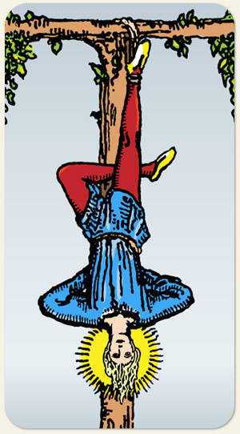

Um momento de suspensão voluntária, a continuação da jornada do Eremita, o brilho da estrela agora foi internalizado e se tornou algo que ele é capaz de acessar sem mecanismos externos, é o Mago que aprendeu outra habilidade além do fazer: o não fazer; os dados foram lançados na Roda, o que tinha que se fazer já foi feito na Força e agora é preciso deixar que o fermento do tempo possa agir. Pessoa sendo pega em uma armadilha, contextos difíceis de serem contornados.
Positivo: Renunciar algo por um bem maior, atos de heroísmo, amor incondicional, necessidade de reflexão, resistência diante das dificuldades.
Negativo: Dificuldade sem ganho, autoflagelo, sacrifício bobo, usar o esforço voluntário como dívida para o outro, estagnação, se sacrificar por vaidade, se colocar em situação de perigo somente para ser resgatado, achar que seu sofrimento não é real.
Amor e Sexo: Relacionamento por um fio, algo que só está ali de enfeite, estar amarradinho, pessoa não disponível, amarrada em outra pessoa, passar por situações estranhas, desconfortáveis ou inapropriadas durante o sexo.
Trabalho e Dinheiro: Trabalhar em lugares altos, em lugares que precisam de equipamento de segurança, onde a pessoa realmente precisa ser suspensa ou pendurada, atividade física, circo, danças aéreas, yoga, serviços fora do convencional, trabalhar com pessoas em estado terminal, que estão com a vida por um fio, a necessidade de ter um momento de pausa para regularizar e organizar o trabalho ou as finanças, ter as atividades suspensas, ser afastado por idade ou por doença, buscar inspiração, trabalhos assistenciais, misericordiosos, socorristas, pessoas próximas do período de aposentadoria. Dívidas (moedas caindo do bolso), conseguir recurso pela misericórdia do outro, ter o nome sujo, dinheiro comprometido, benefício que tá preso, segurar dinheiro, ocupações no serviço carcerário.
Espiritualidade: Médiuns (veem o mundo de outro lado), espíritos sofredores, espíritos pedindo prece, guias em planos inferiores, aqueles que estão na transição entre dois mundos, obsessores, suicidas, espíritos que desencarnaram por sufocamento ou enforcamento, pessoas sacrificadas, torturadas, Anjos, Arcanjos, espíritos que descem para socorrer aqueles que estão em sofrimento, feitiços de aprisionamento.
Símbolos: Homem, Árvore, Auréola.
Cores: Azul, Vermelho, Amarelo, Verde.
Elementos: Água e Espírito.